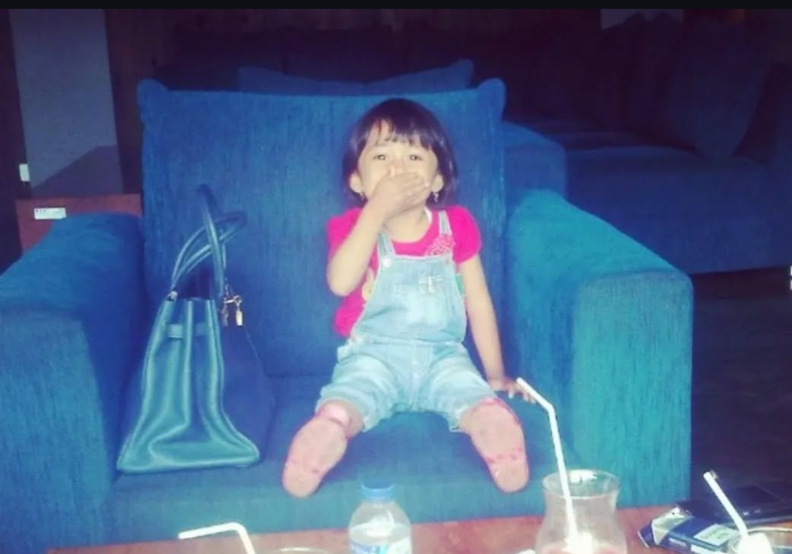

Biwi Maulani Rayakan Ulang Tahun ke-20 dengan Penuh Kebahagiaan dan Harapan

Cirebon, 24 April 2025 — Suasana penuh kebahagiaan menyelimuti perayaan ulang tahun ke-20 Biwi Maulani yang berlangsung hangat dan penuh makna di kediamannya di Bandung, Jawa Barat, pada hari Kamis (24/4). Lahir pada tanggal 24 April 2005, Biwi kini genap menginjak usia dua dekade—sebuah tonggak usia yang menjadi refleksi atas perjalanan hidupnya sekaligus awal dari babak baru.
Dalam momen spesial ini, Biwi tidak hanya merayakan hari lahirnya, tetapi juga menggandeng keluarga serta sahabat terdekat untuk berbagi kebersamaan dan rasa syukur. Nuansa pastel dan dekorasi balon berwarna lembut menambah kesan hangat di lokasi perayaan yang sederhana namun berkesan.
“Ulang tahun ke-20 ini terasa berbeda. Aku merasa lebih dewasa, lebih siap untuk menghadapi masa depan. Terima kasih untuk semua doa dan cinta dari orang-orang terdekat,” ujar Biwi dengan senyum tulus.
Acara ini diisi dengan doa bersama, sesi refleksi pribadi, serta pemotongan kue ulang tahun yang disambut tepuk tangan meriah dari para tamu. Selain itu, Biwi juga menerima kejutan berupa video kolase ucapan ulang tahun dari sahabat-sahabatnya di berbagai daerah.
Tak hanya sebagai selebrasi, ulang tahun ini juga menjadi momentum introspeksi bagi Biwi. Ia mengungkapkan keinginannya untuk lebih fokus pada pengembangan diri dan berkontribusi dalam komunitas sosial yang ia geluti selama ini.
“Semoga di usia 20 ini aku bisa menjadi pribadi yang lebih bermanfaat, tetap rendah hati, dan terus tumbuh dalam kebaikan,” tambahnya.
Perayaan ini menjadi pengingat bahwa ulang tahun bukan sekadar menambah angka usia, melainkan sebuah kesempatan untuk bersyukur, mempererat relasi, dan menyusun harapan-harapan baru. Biwi Maulani telah menunjukkan bahwa perjalanan menuju kedewasaan bisa dijalani dengan penuh rasa cinta dan keikhlasan.
Selamat ulang tahun!!